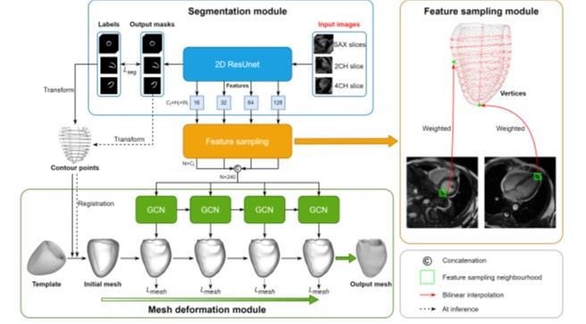
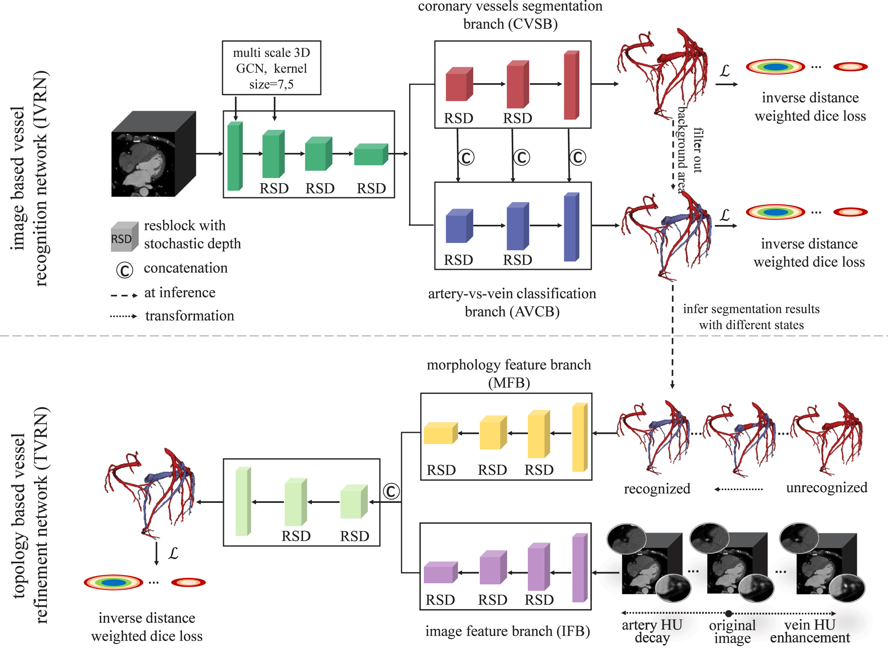
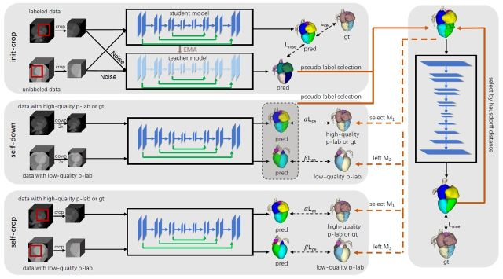
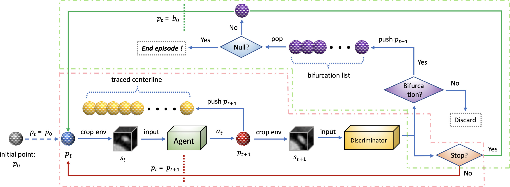
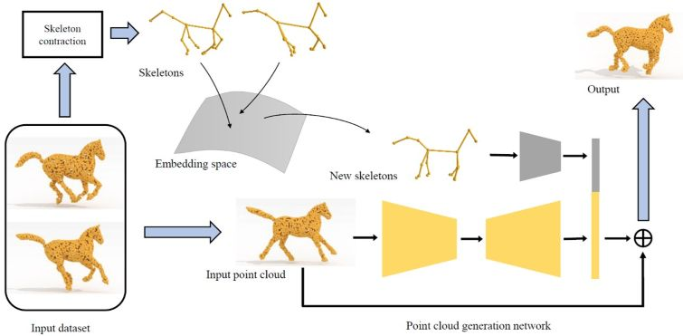

Qing Xia （夏 清）


I'm now an associate research fellow at the State Key Laboratory of Virtural Reality Technology and Systems, Beihang University. Before that, I was a senior research scientist/manager at SenseTime Research and led a R&D team developing cutting-edge products for medical use. I received my Ph.D. degree in 2018 from the State Key Laboratory of Virtual Reality Technology and Systems at Beihang University under the joint supervision of Prof. Aimin Hao (Beihang University) and Prof. Hong Qin (Stony Brook University), then I did my post-doctoral research from 2019 to 2021 at the iMoon: Intelligent Media and Cognition Lab, Tsinghua University, working with Prof. Yue Gao. My major interests are in computer graphics, computer vision and machine learning, more specifically in digital geometry processing and medical image analysis.
We are looking for self-motivated students with solid CV/CG/Med background, feel free to drop your CV to xiaqing[AT]buaa[DOT]edu[DOT]cn.
News
[2025-05-20] Our work "ECGFM" about foundation model for ECG analysis was published on Information Fusion. [2025-05-13] I joined School of Computer Science and Engineering, Beihang University as an associate research fellow.
[2024-12-12] Our work "Slice2Mesh" about 3D reconstruction of left ventricle was published on IEEE TMI. [2024-10-09] One paper on salient object detection with active learning was published on IEEE TPAMI. [2024-07-30] One paper on coronary segmentation and vectorization was published on IEEE TMI. [2023-11-30] One paper on genome-wide association analysis of left ventricle was published on Nature Communications. [2023-10-14] Our work "ADVNet" about coronary segmentation with topological consistency was published on MedIA. [2022-06-29] One paper on contrastive learning for medical image segmentation was published on IEEE TMI. [2021-09-30] I finished my postdoc at the iMoon-Lab, Tsinghua University. Nice trip with Prof. Yue Gao! [2021-01-20] One paper on few-shot learning for Whole Heart Segmentation was published on IEEE TMI. [2020-07-22] I was selected for the 2020 Beijing Science and Technology Rising Star Program (150 under 35).
[2018-12-11] I joined SenseTime Research (Beijing, China) as a full-time ML/CV research scientist.
[2018-09-16] We won the First Place Award among all 27 competitors in Atrial Segmentation Challenge @ MICCAI 2018.
Featured Publications

Jia Xiao, Wen Zheng, Wenji Wang, Qing Xia*, Zhennan Yan, Qian Guo, Xiao Wang*, Shaoping Nie*, Shaoting Zhang.
IEEE Transactions on Medical Imaging (TMI), 2025, 44(3): 1541-1555. [PDF]

Wenji Wang, Qing Xia*, Zhennan Yan, Zhiqiang Hu, Yinan Chen, Wen Zheng, Xiao Wang, Shaoping Nie, Dimitris Metaxas, Shaoting Zhang
Medical Image Analysis, 2024, 91: 102999. [PDF]

Wenji Wang, Qing Xia*, Zhiqiang Hu, Zhennan Yan, Zhuowei Li, Yang Wu, Ning Huang, Yue Gao, Dimitris Metaxas and Shaoting Zhang
IEEE Transactions on Medical Imaging (TMI), 2021, 40(10): 2629-2641. [PDF]


Jiarui Liu, Qing Xia, Shuai Li, Aimin Hao and Hong Qin*. (Joint first co-author)
Computer Aided Geometric Design (CAGD), 2019, 71:63-76. [PDF]